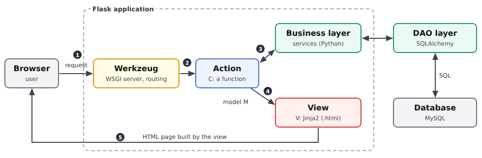

1. 简介
本文档的 PDF 在 |这里|。
本文档的代码在 |这里|。
本文档由 Anthropic 的 AI Claude 制作。它承接文档 “[Spring MVC] Web 框架分步入门”（2026 年），而该文档又承接了文档 “[ASP.NET Core MVC] Web 框架分步入门” 和 “[NestJS] Web 框架分步入门”（2026 年）。本文档将 [Spring MVC] 课程适配到 [Python] 环境：
- 将 [Spring MVC] 框架和 [Java] 语言替换为 [Flask] 3.1 框架和 [Python] 语言（3.12 或更高版本）；
- 将 [Thymeleaf] 视图替换为 [Jinja2] 视图，即 [Flask] 的视图引擎；
- 将 [Bean Validation] 验证替换为 [Pydantic] 库（用于动作参数）和 [WTForms] 库（用于 HTML 表单）；
- [Spring Security] 被为此编写的几十行 [Python] 代码取代，它们依赖 [PyJWT] 库（JWT 令牌）和 [bcrypt] 库（密码哈希）；
- ORM 方面，[Hibernate] 和 [Spring Data JPA] 被 [SQLAlchemy] 取代，数据库仍然是 [MySQL]。
本文档紧密遵循 [Spring MVC] 课程的结构：先是大量小项目，每个项目聚焦一个特定概念，然后是一个完整的案例研究——一个用于医疗诊所预约安排的 Web 应用程序，所有文件都有完整注释。示例的编号和涵盖的主题与 [Spring MVC] 和 [ASP.NET Core MVC] 课程相同：熟悉其中任何一门课程的读者可以逐个示例地比较这些框架。不过这并非必需：本文档自成体系，不要求读者事先了解 [Spring] 或 [ASP.NET]。唯一的先修知识是 Web 编程的基本概念（HTTP 协议、HTML 语言）以及 [Python] 语言（函数、类、字典、模块）。本课程作者的另一门早期课程 《通过示例学习 Python 语言和 Flask Web 框架》（2020 年）介绍了 [Python] 语言本身，适合需要先学习它的读者。
1.1. Flask 在 Web 应用程序中的角色
Web 应用程序通常按层构建，每一层只与相邻的层通信：

- Web 层接收来自浏览器的 HTTP 请求，并向其返回 HTML 页面。这一层正是 [Flask] 帮助我们编写的；
- 业务层包含应用程序的业务规则（例如“一名患者只能有一个即将到来的预约”）。它对 Web 一无所知：它同样可以服务于命令行应用程序；
- 数据访问层（[DAO] 层，即 [Data Access Object]）负责读写数据库。我们将使用 [SQLAlchemy]，这是一个 ORM（[Object Relational Mapper]），它将表中的行映射为 [Python] 对象。
Web 层本身遵循 [MVC] （[Model – View – Controller]）模型：
- 控制器（C）是一组 [Python] 函数，称为 动作，每个动作处理一类请求（例如 [GET /schedule]）。动作读取请求参数，调用业务层，然后选择要显示的视图；
- 模型（M）是动作传递给视图的数据集合；
- 视图（V）是一个 [Jinja2] 文件（扩展名 [.html]）：一个包含 [{{ ... }}] 表达式和 [{% ... %}] 语句（[{% if %}]、[{% for %}]……）的 HTML 页面，[Jinja2] 引擎会用模型中的数据替换它们。
关于术语的说明，以免混淆：[Flask] 文档把处理请求的函数称为 一个 “视图函数”，把 [Jinja2] 文件称为“模板”。本文档采用 [MVC] 模型的术语，也采用 [Spring MVC] 和 [ASP.NET Core MVC] 课程的术语：处理请求的函数称为 动作，生成页面的 [Jinja2] 文件称为 视图，而术语 “模板” 指其他页面所继承的公共视图（第 4 章）。
请求的处理遵循图中的编号步骤：
- 1：浏览器发送一个请求，例如 HTTP 请求 [GET /schedule?doctorId=1&day=2026-09-26]；
- 2：Web 服务器接收请求并将其交给 [Flask] 应用程序。开发期间，该服务器是 [Werkzeug]，即 [Flask] 所基于的库；在生产环境中，则是 [Waitress] 或 [Gunicorn] 之类的服务器。[Werkzeug] 将请求的路径与应用程序的路由进行比较，并选择负责处理该请求的动作：这就是 路由。在到达动作之前，请求还可能经过对所有请求都会执行的函数（[before_request]），我们将在后续章节中探讨；
- 3：动作向业务层请求所需的数据；必要时，业务层会联系 [DAO] 层，后者通过 SQL 查询数据库 [MySQL] ；
- 4：动作构造视图的模型 M，并指示 [Jinja2] 引擎生成页面（函数 [render_template]）；
- 5：视图生成的 HTML 页面就是动作的响应，由 [Flask] 返回给浏览器。
[Flask] 是 [Python] 世界中最常用的两大 Web 框架之一，另一个是 [Django]。它免费且开源，凡是 [Python] 能运行的地方都能运行（[Windows]、[Linux]、[macOS]）。它是一个 微框架：其核心刻意保持小巧（路由、请求和响应、会话、[Jinja2] 视图），其余一切（表单验证、数据库访问、身份验证等）都由开发者选择的库来处理。相比之下，[Spring Boot] 会自行配置一套协调一致的组件，[Flask] 则让开发者自行组装：应用程序更加透明，可以看到其内部发生的一切。这实际上正是它成为优秀学习工具的原因：几乎没有任何东西被隐藏。[Flask] 既可以创建向 [JavaScript] 客户端（[Angular]、[React]、[Flutter]……）返回 JSON 的服务器，也可以创建传统的 Web 应用程序，由服务器生成 HTML 页面，浏览器只负责显示。本文档探讨的是后一种用法。有两个概念——[Python]特有的——会在每一页反复出现：装饰器 （[@app.get("/")]、[@app.before_request]……），它们把函数与某个角色关联起来；以及显式传递每个函数所需的对象，而 [Spring] 会自动注入这些对象。
1.2. 所用工具
示例是使用以下工具编写和测试的（安装方法见附录）：
- [Python] 3.13（任何 3.12 或更高版本均可）。[Python] 安装程序还提供 [pip] 工具（用于下载并安装库）以及 [venv] 模块（用于创建 虚拟环境 （我们稍后会讨论它们是什么）；
- 使用 [Visual Studio Code] 编辑器，以及 Microsoft 的 [Python] 扩展（它还会安装用于分析代码的 [Pylance] 扩展）；
- 一款较新的浏览器（[Chrome]、[Firefox]、[Edge]）；
- 命令行工具 [curl]，用于显示原始 HTTP 响应（[Windows] 10 和 11 已自带）；
- 数据库管理系统 [MySQL] （或 [MariaDB]），例如 [Laragon] 在 [Windows] 下附带的那个，从数据访问一章开始使用，案例研究也会用到。
与 [JDK] 不包含 [Spring] 不同，[Python] 自带非常全面的标准库；但 [Flask] 以及文档中的其他库并不包含在内：[pip] 会在安装时从 [PyPI] 仓库（[Python Package Index]）下载它们（因此当天必须连接互联网）。每个项目都在 [requirements.txt] 文件中描述其所用的库。下表列出了这些库及所用版本：
库 | 作用 | 版本 |
[Flask] | Web 框架：路由、请求、响应、会话、视图；它包含 [Werkzeug] （HTTP 请求、开发服务器）、[Jinja2] （视图）和 [itsdangerous] （签名） | 3.1.3 |
[asgiref] | 异步动作（[async def]），由 [Flask[async]] 安装（示例 03） | 3.12.1 |
[Pydantic] | 动作参数的绑定与验证（第 3 章） | 2.13.5 |
[email-validator] | 电子邮件地址验证，供 [Pydantic] 和 [WTForms] 使用 | 2.3.0 |
[Flask-WTF] | HTML（[WTForms]）表单和 CSRF 防护（第 4 章） | 1.3.0 |
[Babel] | 按语言格式化日期和金额（第 3 章和第 4 章） | 2.18.0 |
[PyJWT] | JWT 令牌（第 8 章） | 2.15.0 |
[bcrypt] | 密码哈希（第 8 章） | 5.0.0 |
[SQLAlchemy] | ORM，数据库访问（第 9 章） | 2.1.1 |
[PyMySQL] | 该 [MySQL] 驱动程序，用 [Python] 编写（第 9 章） | 1.2.3 |
[Waitress] | 生产环境 Web 服务器（案例研究） | 3.0.2 |
1.3. 运行案例研究
审阅者的话：我建议读者按下文所述立即运行案例研究。当你完全理解这个预约应用程序的作用后，请让你喜欢的 AI 按如下方式修改应用程序：从现在起，每位医生都将能够：
- 在两个日期之间设置自己的预约时段。这样他们就可以根据需要调整日程；
- 为某一天从日历中移除某些时段——例如，因个人原因无法出诊时；
这一修改并不简单，因为它涉及数据库结构的变更。请让 AI 为你提供新的应用程序代码和创建新数据库的 SQL 脚本。为此，你需要向它提供包含完整项目的 ZIP 文件以及旧数据库的 SQL 脚本。
另外，我没有审阅由 Claude 创作的课程。它此前已经产出了完美的 [NestJS]、[ASP.NET Core MVC] 和 [Spring MVC] 课程，我就假定这一门也是如此。如果你在理解某些内容时遇到问题，解决办法始终相同：请你喜欢的 AI 解释你不理解的地方。Claude 就非常擅长这一点。你可能需要把不理解的示例“上传”给它。
说明结束。
本文档末尾的案例研究是一个完整的应用程序。读者很可能想在深入细节之前先看看它的运行效果：下面介绍如何运行它。它位于 [rdvmedecins2-flask] 文件夹中，与 [examples] 文件夹并列：
你必须已安装 [Python] （3.12 或更高版本）、[Visual Studio Code] 和 [MySQL] （见附录）。然后：
- 创建 [dbrdvmedecins2] 数据库：运行 脚本 [rdvmedecins2-flask/database/dbrdvmedecins2.sql]。如果使用 [Laragon]，打开 [HeidiSQL] 工具（Database 按钮），然后通过 File / Run SQL 菜单运行该脚本。在命令行中，则在 [rdvmedecins2-flask] 文件夹下执行：
- 打开 [rdvmedecins2-flask] 文件夹 （使用 [Visual Studio Code] ，File 菜单 / Open Folder），然后打开终端（Terminal 菜单 / New Terminal）；
- 创建 应用程序的 虚拟环境 并 激活它。虚拟环境是一个文件夹（此处为 [.venv]），其中包含特定项目所需的 [Python] 解释器副本和库——而且只包含这些库：每个项目都有自己的一套，版本适合自己，不会干扰计算机上的其他项目。在 [Windows] （命令提示符或 [Visual Studio Code] 的终端）中：
在 [Linux] 和 [macOS] 下：
- 环境激活后，终端提示符以 [(.venv)] 开头，并且 [python] 和 [pip] 命令即为该环境中的命令。在 [Windows] 下，[PowerShell] 终端有时会拒绝运行激活脚本（消息：“Script execution is disabled on this system”）：命令 [Set-ExecutionPolicy -Scope CurrentUser RemoteSigned] 只需输入一次即可永久启用。[Visual Studio Code] 会检测该环境并提议将其用于项目：你必须接受（也可以通过 Python 命令 Select Interpreter 选择，Ctrl-Shift-P）；之后打开的终端会自动激活它；
- 安装 应用程序的 库 到虚拟环境中：
- 检查数据库连接。应用程序连接到 [MySQL] ，位于 [localhost]，端口 3306，使用用户 [root] ，不带密码 （这是 [Laragon] 的默认设置）。如果你的 [root] 账户有密码，请在应用程序的 [config.py] 文件中，在 [DB_PASSWORD = ""] 这一行填写（例如 [DB_PASSWORD = "myPassword"]）。为避免把密码写入项目文件，也可以在环境变量 [FLASK_DB_PASSWORD] 中指定它，该变量优先于文件：[set FLASK_DB_PASSWORD=myPassword] 用于 [Windows] （命令提示符），[$env:FLASK_DB_PASSWORD="myPassword"] 用于 [PowerShell]，[export FLASK_DB_PASSWORD=myPassword] 用于 [Linux] 和 [macOS]；
- 启动应用程序 （在 [Linux] 和 [macOS] 下，使用 [python3] （如果 [python] 不存在）：
- 应用程序读取数据库，然后启动 [Flask] 开发服务器。控制台会显示发送给数据库的 SQL 命令（这里只列出主要的几条），随后是服务器消息：
每条 [SQLAlchemy] 日志都以日期和时间开头（此处用 [...] 代替）。它表明应用程序已读取医生和客户的列表（两条 SQL 请求），服务器正在地址 [127.0.0.1]（即 [localhost]）的 8081 端口上监听，并且运行在 调试模式下：每当某个 [Python] 文件被修改时，应用程序会自动重启（[Restarting with stat]：监视文件的进程会重启应用程序，应用程序随即重新读取数据库），发生意外错误时会显示调试页面（“PIN”用于保护该页面中的控制台）。警告提醒你：该服务器仅用于开发，而非生产环境（案例研究会说明如何使用生产服务器）；
- 在浏览器中打开 URL [http://localhost:8081] ：

- 使用演示账户之一登录，每个账户的密码与用户名相同：[admin] （管理员）、[pelissier]、[tatou]、[dupont] （医生）、[martin]、[durand]、[bistrou]、[german] （患者）。你还必须输入图片中的字符，大小写均可。
启动时，应用程序会读取数据库：如果 [MySQL] 无法访问，它会立即停止，控制台会在一长串错误消息的末尾显示原因（位于“Background on this error”这一行之前）。如果消息是 [Can't connect to MySQL server on 'localhost' ([Errno 111] Connection refused)] （或 [[WinError 10061]] ，在 [Windows] 下），则表示 [MySQL] 尚未启动；如果是 [Access denied for user 'root'@'localhost']，则表示密码错误；如果是 [Unknown database 'dbrdvmedecins2']，则表示尚未执行 SQL 脚本；如果是 [ModuleNotFoundError: No module named 'flask']，则表示虚拟环境未启用（或库尚未安装到其中）；如果是 [Address already in use] （或 [Port 8081 is in use by another program]），则表示 8081 端口已被占用（例如被应用程序的 [Spring MVC] 版本占用）。应用程序的 [README.md] 文件描述了其他情形。在终端中使用 [Ctrl-C] 停止应用程序。
文档末尾的案例研究演示了如何使用该应用程序，然后逐一讲解它的每个文件。
1.4. 示例
示例保存在 [examples] 文件夹中，每个示例对应一个子文件夹：
每个示例都是一个可独立运行的小型（[Flask]）应用程序。所有示例使用相同的库，它们在文件 [examples/requirements.txt] 中描述：
- 第 3 行：[Flask]，以及编写异步动作所需的内容（附加的 [[async]]，它会添加 [asgiref] 库；参见示例 03）；
- 第 4–7 行：表单、验证和按语言的格式化；
- 第 8–9 行：身份验证（第 8 章）；
- 第 10–11 行：数据库访问（第 9 章）。[[rsa]] 扩展使 [PyMySQL] 增加了 [cryptography] 库，连接使用受密码保护账户的 [MySQL] 8 服务器时需要它。
每行的形式为 [name==version]：[==] 运算符要求 恰好 是这个版本，即测试这些示例时所用的版本。也可以不那么严格（[Flask>=3.1]：3.1 或更高版本）；但是，库的未来版本可能会改变其行为，而课程必须能完全按所写内容复现。以 [#] 开头的行是注释。
要运行这些示例，首先一次性在 [examples] 文件夹中为示例创建虚拟环境（详见案例研究）：
（[source .venv/bin/activate] 用于 [Linux] 和 [macOS]）。[common/bootstrap] 文件夹包含 CSS 和 [Bootstrap] 框架，由需要排版页面的示例共享（从示例 15 开始）。
几乎所有示例的结构都相同。例如示例 13 的结构：
- [app.py]：应用程序的启动文件，即被执行的文件；它构建应用程序并启动服务器（参见示例 01）；
- [controllers]：控制器，即包含动作的文件。这是一个 [Python] 包：一个包含模块（[.py] 文件）的文件夹，这些模块可以被导入（[from controllers.views import views]）。文件 [__init__.py]在这里是空的，它使该文件夹成为一个包（首次导入该包时会执行它）；
- [models]：描述模型（动作和视图的模型）的类；
- [templates]：[Jinja2] 视图（从第 4 章开始）。[Flask] 会在应用程序文件旁边的这个文件夹中查找它们；
- [static] （从示例 15 开始）：原样发送给浏览器的文件（样式表、图片、[JavaScript] 脚本）。
要运行示例，请在其文件夹中打开终端（在 [Visual Studio Code] 中：右键单击示例文件夹，然后选择“Open in the built-in terminal”），如果示例的虚拟环境尚未激活，则先激活它（[..\.venv\Scripts\activate] 用于 [Windows]，[source ../.venv/bin/activate] 用于 [Linux]，和 [macOS]：环境位于 [examples] 文件夹中，它是示例文件夹的父文件夹），然后输入：
所有示例都监听 5000 端口：同一时间只能运行一个。在终端中输入 [Ctrl-C] 可停止服务器。在 [macOS] 上，5000 端口有时已被系统的“AirPlay Receiver”占用（消息 [Address already in use]）：可以在 System Settings / General / AirDrop and Handoff 中将其禁用，或者在示例的 [app.py] 文件中更改端口（[port=5001]）。
当你打开 [examples] 文件夹时（在 [Visual Studio Code] 中），[Python] 扩展会建议使用 [.venv] 环境：这样每个文件都能享受语法高亮、代码补全和错误提示。每个示例都从自己的文件夹启动；因此示例中的导入（[from controllers.views import views]）都从该文件夹开始。[Pylance]会分析打开的文件夹（[examples]）中的代码，因此可能把这些导入标示为缺失：这对执行没有影响。要让 [Pylance] 找到它们，只需直接打开示例自身的文件夹（File 菜单 / Open Folder）。最后，所有示例都以 调试 模式运行（参见示例 01）：只要其中某个 [Python] 文件被修改并保存，正在运行的应用程序就会在大约一秒内自动重启。
使用 [Bootstrap] 的示例在 [common/bootstrap] 文件夹中找到它，而不是在自己的文件夹中：这样可以确保该文件只有一份副本。这些示例都通过 URL [/bootstrap/...] 来调用它，方法是在 [app.py] 文件中写几行代码。例如 [15-layout/app.py]：
- 第 11 行：文件夹 [common/bootstrap] 的路径。[__file__] 是当前正在运行的文件（[app.py]）的路径；[Path(...).resolve()] 将其变为绝对路径；[.parent] 指包含它的文件夹（[15-layout]），而 [.parent.parent] 指父文件夹（[examples]）。[Path] 对象的运算符 [/] 会向路径添加一个元素，并使用正确的分隔符（[\] 在 [Windows] 下，[/] 在其他系统上）。因此该路径不依赖于当前文件夹：示例能找到 [Bootstrap] ，无论从何处启动；
- 第 20–21 行：蓝图 是存储在应用程序中的一组路由（参见示例 02）。该蓝图没有路由：它仅用于发布 [common/bootstrap] 文件夹（参数 [static_folder]），发布在 URL [/bootstrap] 下（参数 [static_url_path]）。因此页面可以使用样式表 [/bootstrap/css/bootstrap.min.css]。
该文件中的其他行将在示例 15 中讲解。
1.5. 文档内容
本文档的结构如下：
章 | 内容 | 示例 |
动作、路由、响应 | 从请求到动作：路由、蓝图、响应、重定向、共享服务 | 01 至 06 |
动作模型 | 请求参数：绑定、转换、使用 [Pydantic] 验证、POST 表单 | 07 至 12 |
视图及其模型 | [Jinja2]、模板、宏、[WTForms] 表单、验证、PRG、CSRF 防护 | 13 至 21 |
国际化 | 法语和英语双语应用程序 | 22 |
数据作用域 | 应用程序、请求、会话、客户端 | 23 |
请求的生命周期 | WSGI 中间件、[before_request]、[after_request]、[teardown_request]、转换器、错误处理程序 | 24 |
身份验证与授权 | Cookie 中的 JWT、装饰器、角色、验证码(CAPTCHA)、尝试次数限制 | 25–27 |
分层架构 | Web / 业务逻辑 / DAO，使用 [SQLAlchemy] 和 [MySQL] | 28 |
案例研究 | RdvMedecins 应用程序，逐文件讲解 | - |
每个示例只引入少量新概念，各章环环相扣：最好按顺序阅读。而案例研究则综合运用了前面各章的 全部 概念：只要相关，其说明就会引用该概念首次出现的示例。附录介绍了如何安装工具：[Python]、[Visual Studio Code] 及其 [Python] 扩展、[MySQL] （配合 [Laragon]）以及 [curl]。